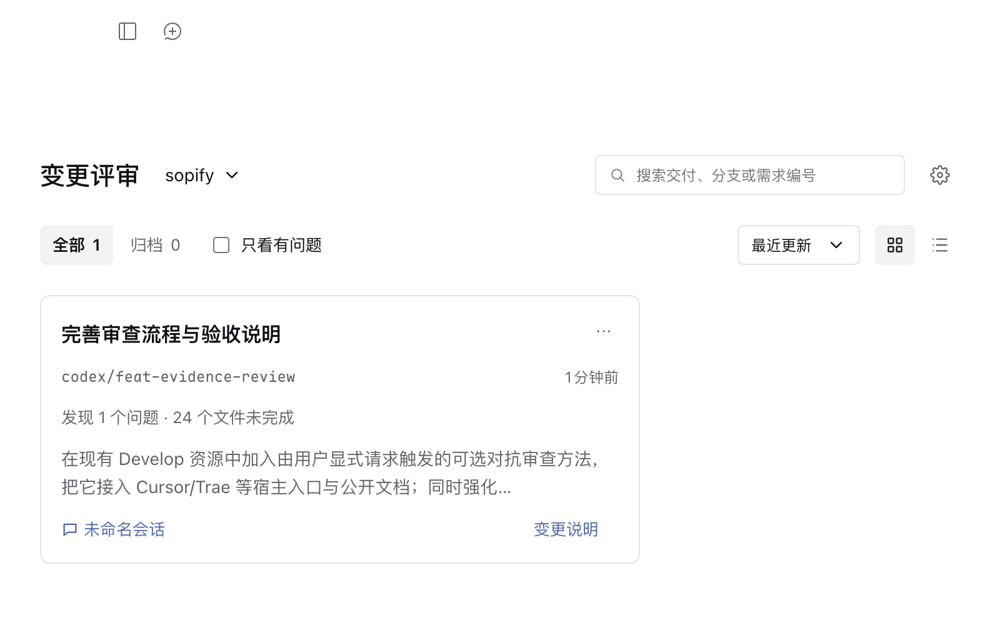
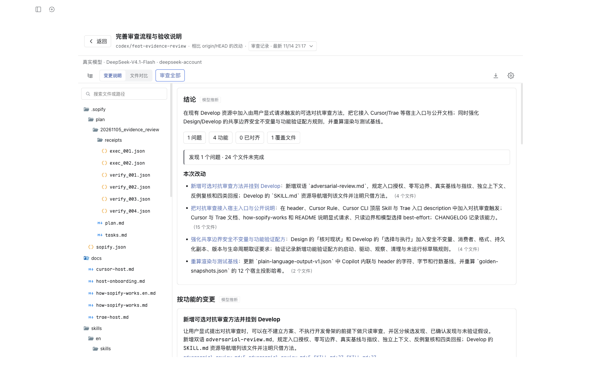

列表与评审台
交付列表
- 工作区：点页头的工作区名切换，与 DSH 左侧栏一致。
- 排序：按最近活动排列；置顶的排最前。
- 「…」菜单：置顶、归档、删除。删除会连同审查记录和批注一起删掉，不能恢复。
- 搜索：按标题、需求编号或分支，已归档的也能搜到。


整批变更说明
| 部分 | 说明 |
|---|---|
| 结论 | 交付目标、本次改动、审查结论 |
| 按功能的变更 | 为什么改、怎么改、行为影响 |
| 需求对齐 | 未对齐 / 待确认、已对齐、已调整、需求外改动 |
| 问题 | 按严重程度汇总，点击定位代码 |
| 审查覆盖 | 已审、待审、跳过、失败的文件 |
| 需求依据 | 会话里的需求原文，也可以手动添加 |
「已调整」指后来的要求改掉或取消了这一条，不算未对齐。每条说明都标明是「代码事实」还是「模型推断」。


文件对比与问题
- 筛选：全部文件、风险文件、新改动（与上次审查相比有变化）。
- 问题卡片插在代码行下：类别、严重程度（P0 阻断 / P1 严重 / P2 一般）、问题、影响、建议。
- 每个问题都引用冻结代码的原文作为证据，核对不上的不展示。
- 不认同可以「标记非问题」，随时恢复；也可以在代码行或问题上添加批注。

审查记录
每次审查都冻结当时的代码和结论。顶栏「审查记录」可以切换到较早的记录，旧记录只读。